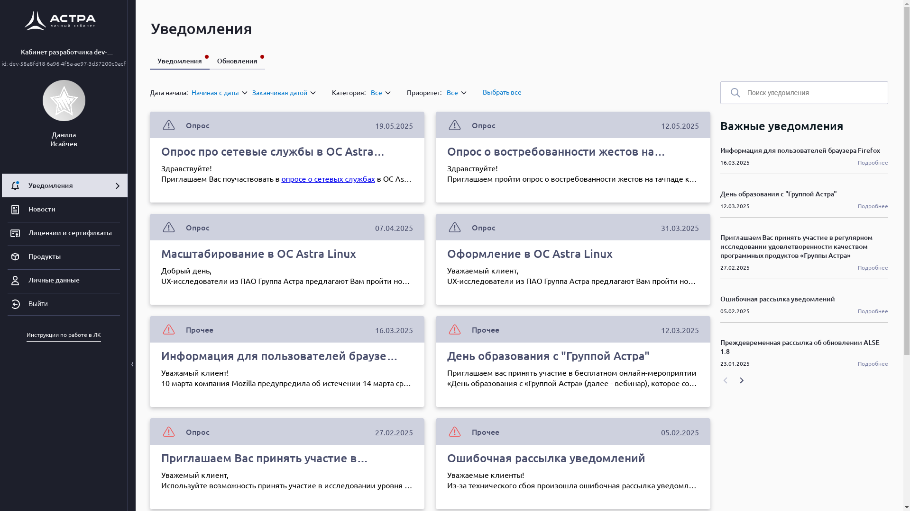
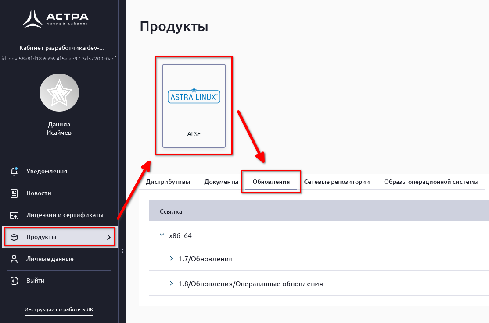

Установка Astra Linux SE 1.8 #
Загрузка образа #
Для установки Astra Linux Special Edition 1.8 необходимо предварительно скачать образ установочного диска. Сделать это можно перейдя по адресу https://lk.astra.ru/ и авторизовавшись в личном кабинете пользователя Astra Linux.

После авторизации в меню сайта нужно выбрать раздел «Продукты», в нём выбрать «ALSE» и перейти во вкладку «Обновления».

Во вкладке «Обновления» нужно выбрать раздел «1.8/Обновления/Оперативные обновления» и выбрать самое последнее обновление.
В выбранном обновлении нужно кликнуть по разделу «Обновления (изменения) репозитория технологического установочного диска» и выбрать файл с расширением .iso
Создание установочного носителя #
Для установки Astra Linux на компьютер необходимо подготовить установочный носитель, используя скачанный образ технологического установочного диска. Для создания установочного носителя в операционной системе Windows можно использовать Rufus, в macOS – balenaEtcher, в операционных системах, использующих в своей основе ядро Linux – команду dd.
Установка Astra Linux SE 1.8 второй системой #
Если на компьютере уже установлена другая операционная система, можно установить Astra Linux второй системой для запуска в режиме dual boot. Тогда при включении компьютера можно будет выбирать, какую систему необходимо загрузить. Для простоты установки Astra Linux в dual boot рекомендуется предварительно создать на диске пустой раздел того объёма, который Вы хотите выделить выделить под Astra Linux.
Установка Astra Linux SE 1.8 #
Подготовка к установке #
Чтобы установить Astra Linux необходимо подключить установочный носитель к компьютеру. После этого нужно включить компьютер и убедиться, что установочный носитель будет первым из устройств в списке загрузочных устройств. Сделать это можно перейдя в BIOS и проверив порядок устройств в подразделе Boot Device Priority раздела Boot.
Убедившись в том, что при запуске компьютера загрузка будет выполняться с установочного носителя, можно переходить к установке.
Запуск программы установки #
В отличии от установки Astra Linux SE 1.7 установка Astra Linux SE 1.8 происходит с LiveCD. Это позволяет попробовать операционную систему до её установки.
После загрузки LiveCD нужно дождаться запуска программы установки или запустить её вручную с помощью ярлыка на рабочем столе.

Начало конфигурации установки #
В начале установки нужно выбрать язык программы установки (по умолчанию – русский) и уровень защищённости в соответствии с приобретённой лицензией. Для домашнего использования оптимальным выбором является базовый уровень защищённости «Орёл».
После этого нужно прочитать и принять условия лицензионного соглашения и нажать кнопку «Далее».
Региональные настройки #
В ходе этого этапа «Региональные настройки» нужно выбрать часовой пояс, сочетание клавиш для смены раскладки клавиатуры и язык операционной системы. При желании, можно вручную установить дату и время, а также добавить дополнительные раскладки клавиатуры.

Компоненты установки #
На этапе «Компоненты установки» нужно выбрать диск для установки Astra Linux, профиль его разметки и ядро Linux. Для определения нужного диска в списке можно использовать отображаемые имя и объём.
Установка в dual boot #
В программе установки Astra Linux SE 1.8 отсутствует опция автоматической разметки свободного пространства на диске, поэтому для установки в dual boot необходимо выбрать профиль «Ручная разметка» и открыть программу разметки диска.

В программе разметки диска нужно выбрать заранее выделенное свободное место и создать: – раздел для загрузчика; – раздел для корня файловой системы; – файл подкачки.
Раздел загрузчика должен иметь тип файловой системы BIOS Boot для компьютеров с BIOS и EFI System Partition для компьютеров с UEFI. Размер и точка монтирования раздела BIOS Boot определяются программой разметки диска автоматически. Для раздела типа EFI System Partition нужно указать точку монтирования /boot/efi и выделить от 600 МБ до 1 ГБ памяти.
Раздел корня файловой системы должен иметь тип ext4 и точку монтирования /. Для него можно можно выделить всю оставшуюся память.
В соответствии с официальной документацией файл подкачки должен быть не менее 2-3 ГБ. Если на компьютере предполагается использовать режим сна, то файл подкачки может занимать от 4 ГБ до 16 ГБ.
Установка единственной операционной системой #
При установке Astra Linux на компьютер в качестве единственной операционной системы выберем вариант: «Использовать все пространство на диске».
Выбор ядра Linux #
Выберем рекомендуемое ядро Linux, на данный момент это - linux-6.1-generic.
Также на этапе «Компоненты установки», при желании, можно выбрать для установки дополнительные программы и настройки безопасности операционной системы, однако значения по умолчанию оптимальны для домашнего использования.
Пользователи #
На этапе «Пользователи» нужно выбрать имя компьютера, имя администратора для входа в систему, ввести и подтвердить пароль администратора.
Требования к имени компьютера #
Имя компьютера должно состоять только из латинских букв, цифр, тире и нижнего подчёркивания. Нежелательно использовать слишком длинные имена (более 15 символов).
Требования к имени пользователя для входа в систему #
Имя для входа в систему должно начинаться со строчной латинской буквы, оно может включать в себя латинские буквы, цифры, тире и нижнее подчёркивание. Максимальная длина имени для входа – 32 символа.
Требования к паролю #
Пароль может состоять из латинских букв, цифр и служебных символов. Минимальная длина пароля – 8 символов.
При желании для полей «Имя компьютера» и «Имя для входа в систему» можно оставить значения по умолчанию.
При желании на этом этапе можно сразу же создать других пользователей, для этого нужно нажать кнопку «Добавить», после чего ввести: имя для входа в систему, пароль и подтверждение пароля, после чего нажать кнопку «Сохранить».

Сводка #
Последний этап перед установкой системы – «Сводка». На нём программа установки демонстрирует сводку по всем предыдущим этапам. Нужно с ней ознакомиться и, убедиться, что всё верно.
При желании можно отметить галочкой пункт «Перезагрузить после установки», чтобы по завершении установки компьютер автоматически перезагрузился. После этого необходимо нажать кнопку «Установить» и подтвердить начало установки.

Если на этапе «Сводка» не была отмечен пункт «Перезагрузить после установки», по завершении процесса установки нужно нажать кнопку «Перезагрузить». После чего программа установки завершит свою работу и выполнит перезагрузку компьютера.
Первый запуск #
После перезагрузки на экране появится меню загрузчика GRUB. Управление в нём осуществляется с помощью клавиш со стрелками вверх и вниз и клавиши Enter. В меню GRUB необходимо выбрать первую опцию или подождать пять секунд до автоматического выбора опции по умолчанию.

После загрузки на экране появится экран входа в систему. Введём в поля «Имя пользователя» и «Пароль» соответствующие значения, введённые на этапе создания учётных записей пользователей программы установки Astra Linux Special Edition 1.8 и нажмём кнопку «Войти».
При первом входе после нажатия кнопки «Войти» запустится процесс инициализации пользователя, включающий в себя создание личного каталога пользователя
После завершения процесса инициализации будет выполнен вход в систему, и на экране появится рабочий стол пользователя.
На этом процесс установки Astra Linux Special Edition 1.8 завершён.